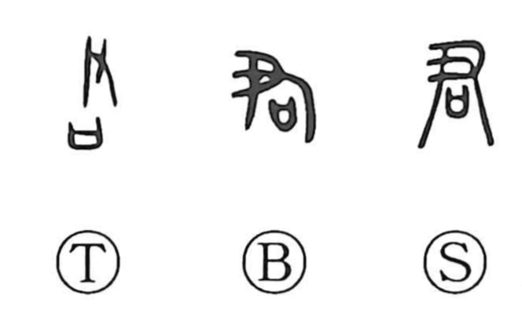

君

Kun: kimi | On: kun
lord ・ sovereign ・ ruler
Explanation
君 combines 尹 with 口. 尹 shows a hand holding a sacred staff, the implement of a priest who could invite a god to approach. The 口 below it is a vessel containing the words of a prayer. Together they identify the chief ritual specialist: the person who held the divine staff and recited the prayers that summoned the god.
This religious authority also became authority over the community. 君 developed from the leader of the rite into the head of a clan or territory, then a lord or sovereign whose powers included both worship and government. The respect attached to that position extended the word to other honoured people. Japanese kimi continues the character’s use as a title or form of address.